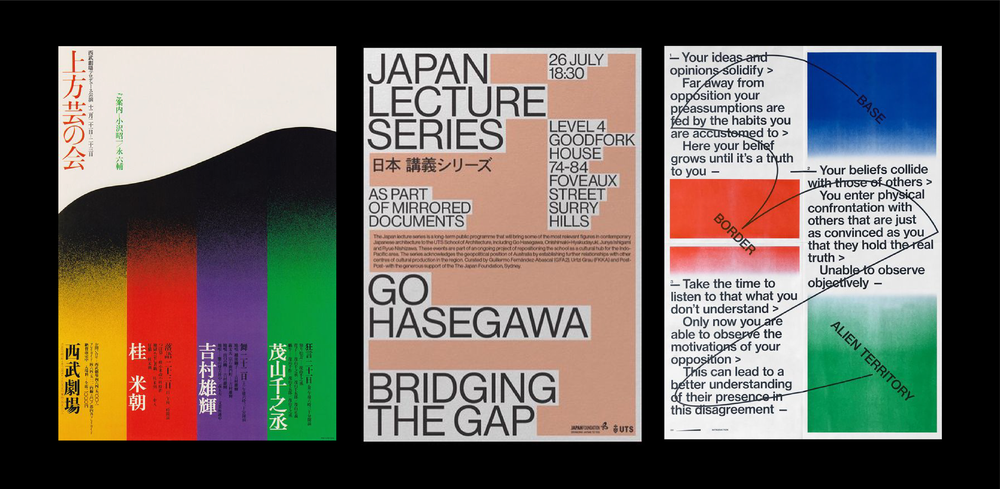
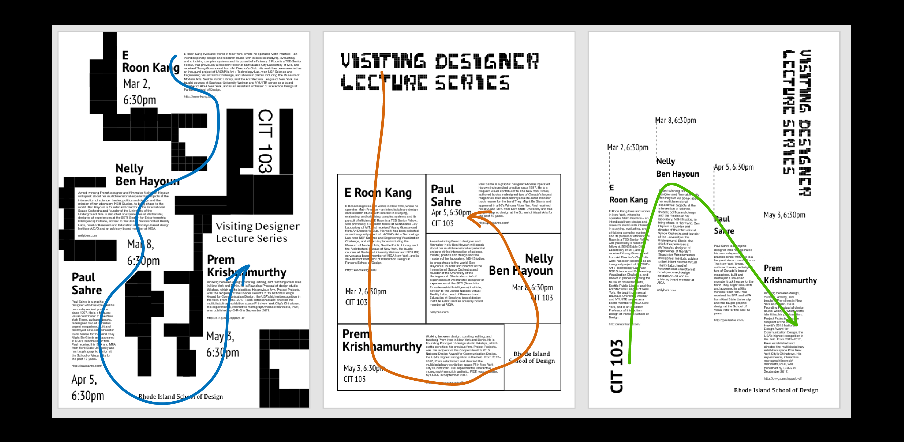
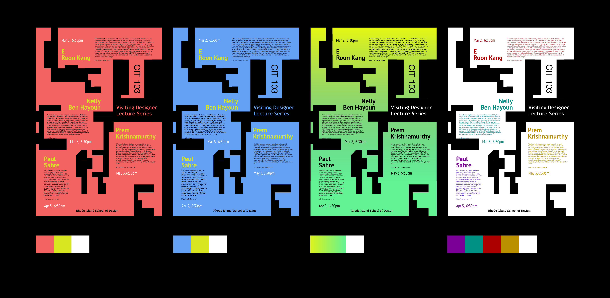
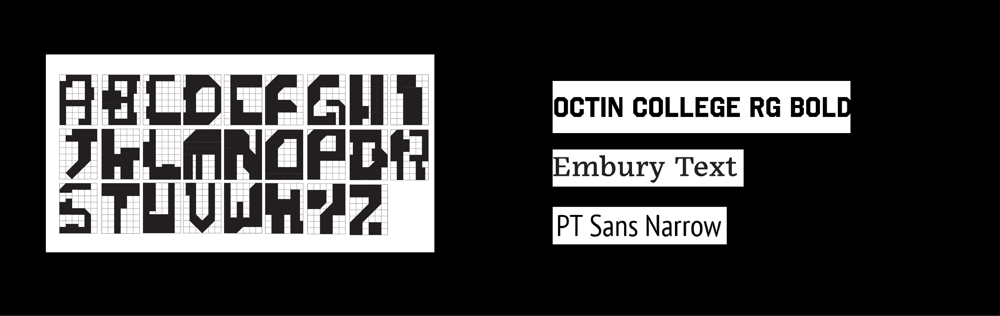
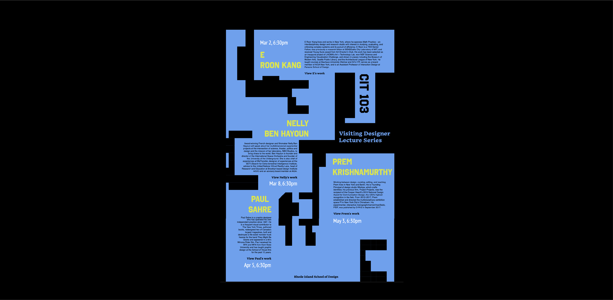

Inspiration
 Camillo Sitte, The Modern Revival of Civic Art, 1889(left) Thomas B, The Historic View, 2011(right)My typeface is inspired by the urban map and ariel views of the city. I found the shape of the architecture looks like symbols and the structure is very organized. So I decided to create a set of typeface which shares the same aesthetic of architectural forms.
Brainstorm Sketches
I picked elements from some urban maps and sketched out the strokes of each letters in procreate. I experienced with different form compositions and tried to come up some universal elements when creating each letter.
Refined design in Adobe Illustrator
After refining my sketches, I imported the drawings into illustrater and created a grid so it would help me with designing the html file.
Final design
In my final outcome, I changed some letters which have curved strokes to make the whole typeface look more consistant in style and reinforce the rigid feeling of urban maps.
See the final typeface Click here